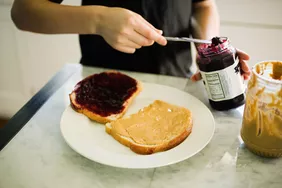

Peanut Butter and Jelly Recipe

Description
A basic recipe for a peanut butter and jelly sandwich!
Ingredients
- 1 bottle of jelly
- 1 bottle of peanut butte
- 2 slices of honey oat bread
Steps
- Scoop jelly with knife and spread it on 1 slice bread until bread is covered
- Scoop peanut butter with knife and spread it on the other slice of bread until bread is covered
- Sandwich breads together with the condiments touching
- Enjoy